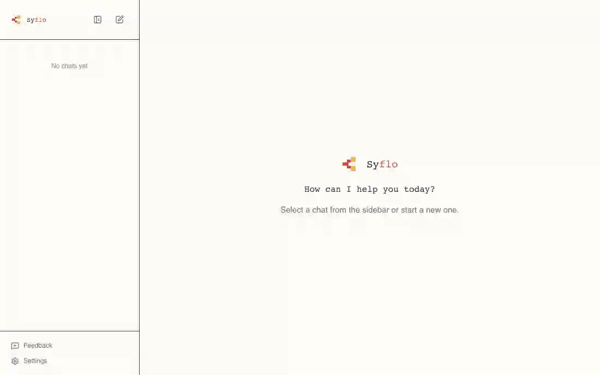
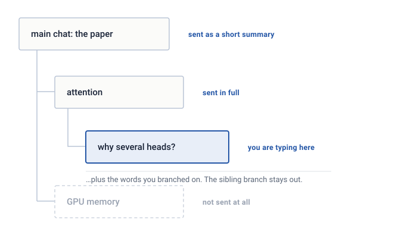
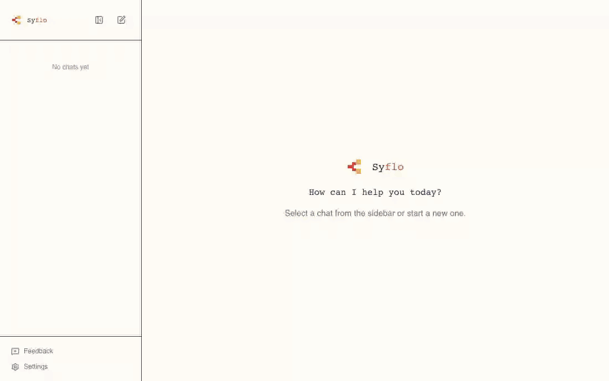
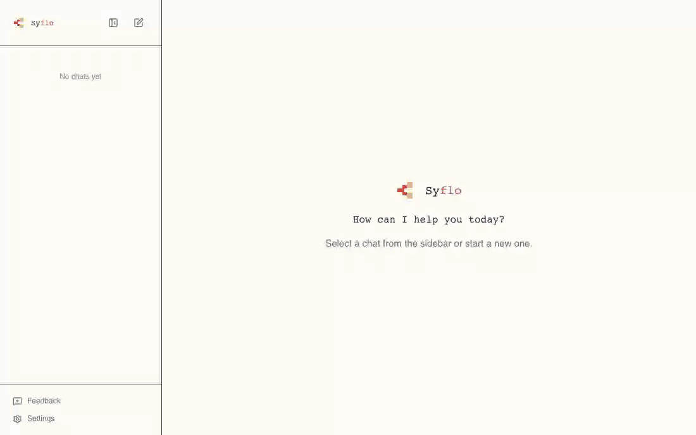
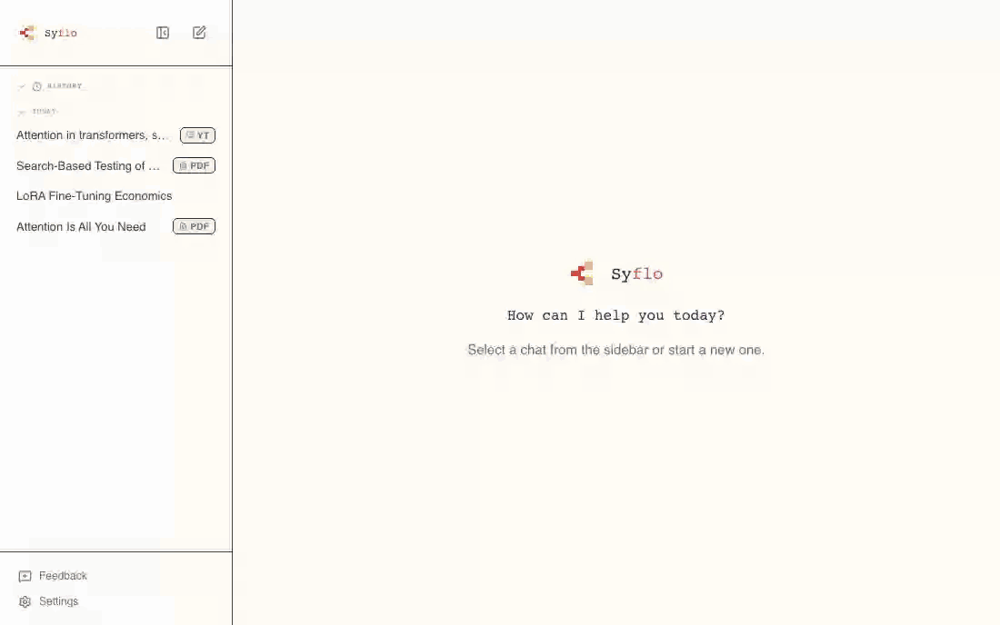
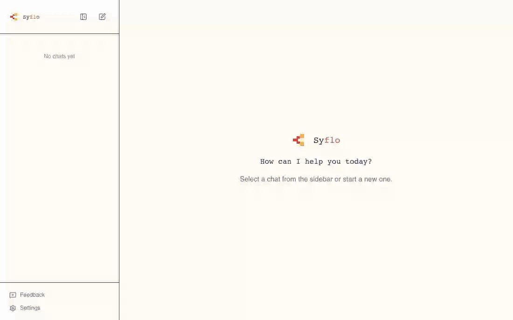
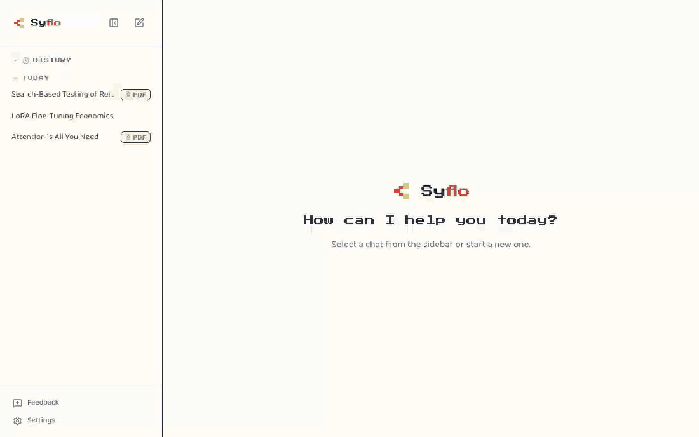

Syflo: turn one long chat into a tree of branches
The problem: an AI chat app — ChatGPT, Claude, any of them — gives you one long scroll. Learning doesn't work like that. What you're reading has to stay in view, and the questions you've raised along the way have to stay easy to find.
Syflo does those two things.
- You keep one main chat, and open a branch for every side question.
- The source you started from — a paper, a PDF, a video — stays visible however many questions you ask, so you keep the context as you dig deeper.
It's open source.
01Any question can get its own chat branch
A branch is created when you ask for one: right-click a word, select a phrase in the answer or the paper, or type /branch <topic>.
The questions then have somewhere to live. A week later I can still find the one about attention heads, because it is its own chat, not message 34 of 90.

02The context sent to the model stays short
The part I underestimated while building it, and the one I notice every evening. Say my tree looks like this:

The GPU memory branch is not sent at all. It has nothing to do with the question, so the conversation you carry stays small however deep you go.
Three things follow, and I notice all three daily: faster answers, much less wandering off topic, and a free daily allowance that lasts — a long chat carries its whole history into every turn, and a daily quota notices.
03The source stays visible
In Syflo a source belongs to the tree, not to a message. Attach it once and it holds the centre of the window: message ninety can still ask it questions, and so can a branch four levels deep. There is no re-upload, because nothing was ever uploaded to a message.
Research papers
Search for a published paper by name, or upload your own PDF. Select a passage and highlight it in one of five colours, the way you would on physical paper — then ask about it in the chat you're in.
The part I use most: ask about a passage and the quote stays clickable in your own message. One click scrolls the PDF back to that line and lights it up — three questions later I can still find what the answer was about.
YouTube videos
Search for a video, import it, and the transcript becomes the tree's source — plus a structured overview with clickable timestamps, so you can decide what is worth watching before you watch it.
The transcript then behaves like the paper: select a sentence, ask what it means, branch off it. A two-hour video becomes something you can interrogate instead of something you have to sit through.

No attachment at all
None of this is required. Plenty of my trees have nothing attached — an algorithm, a bug I'm thinking through — and they branch the same way. The chat then takes the whole window, and inside a branch the centre pane shows the parent conversation, read-only.
Models (BYOK)
Gemini, Groq, OpenAI, Anthropic, or local Ollama — your key, switchable mid-conversation from the composer.
It's bring-your-own-key, but you should not have to pay for this. Gemini and Groq both hand out free keys with a daily allowance, and a whole evening of reading fits inside it — I have never paid for a Syflo session.
When one allowance runs out, Syflo moves to the next free model by itself and remembers not to try the exhausted one again until it resets.

Try it
npm install -g syflo
syfloNode 20+ is the only hard requirement. On first start, add a provider key in Settings.
The key stays yours. Syflo ships without one, never proxies your traffic, and keeps everything in ~/.syflo. If you want no provider at all, point it at a local Ollama model — then no part of your conversation reaches a provider, and the model costs nothing.
Repository: https://github.com/kavi-senewiratne/syflo
Honest expectations: a nights-and-weekends project by one person, useful to me daily and not a product. No roadmap, no release cadence, and the SQLite schema still moves. Issues and pull requests are welcome; a promise that your idea gets built is not.
What it comes down to
Two ideas: a question gets somewhere to live, and the thing you are reading doesn't disappear behind ninety messages.
Neither is something a single scrolling chat gives you, and once you have read this way, the scroll is hard to go back to.
Bonus content — the smaller things
None of these are a reason to install Syflo. They are the reasons it stays pleasant once you have.
One-line definitions
Right-click a word and a one-line definition appears where you are looking. No new chat, no message in the transcript — you read it and close it again.

Highlights
Highlights in five labelled colours work in the PDF, the transcript and the chat. A drawer lists every mark in the tree; click one to jump back, wherever it lives.
Branch links
Words you have branched on turn into coloured links in the original answer, so you can get back to a side chat from the sentence that started it.

Asking straight from the paper
Select a passage in the PDF and you get two choices: ask about it here, and it arrives as a quote above your question, or open it as its own branch, which starts a chat that already knows which sentence it came from.
The mind map
The whole tree as a map, root on top. Every node is a chat: click one and you land in it, the conversation right below the map. This is how I come back to a tree a week later.
Moving around
The whole app is reachable from the keyboard — tree, highlights, composer — with no modal "navigation mode" to enter or forget.

Slash commands
/btw asks a throwaway side question without cluttering the chat. /branch <topic> starts a branch on something the model never said.
Mentions
Attachments get an @alias. Rename a screenshot to @results and mention it mid-sentence, with autocomplete — "does the diagram in @architecture match the numbers in @results?"

The Mushroom Kingdom
Four themes: Mushroom Kingdom by default — sky, clouds, question blocks — plus a Matrix terminal, Hyrule, and a plain blue one for when you need to look like an adult.

Running it fully offline
Point Syflo at Ollama and everything that touches a model runs on your machine: the answers, the search over long papers, the titles and summaries, the dictation. No key, no bill, and none of your conversation leaving the laptop — a local failure never falls back to the cloud on its own.
Honest limitation: a small local model is noticeably weaker than Gemini on a dense paper. I use local when I don't want a document to leave the machine, cloud when I want the best answer.

Syflo is maintained by one person in the evenings. There is no roadmap. But it is open, and it is what I use every day.